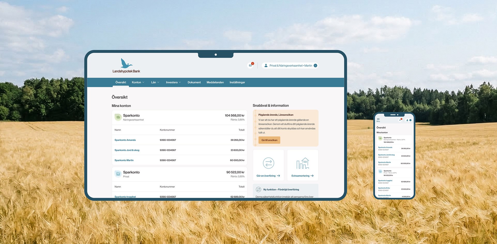
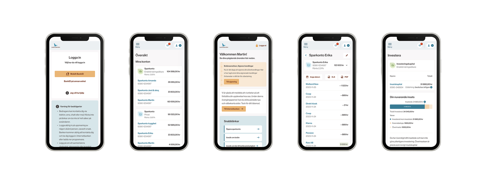
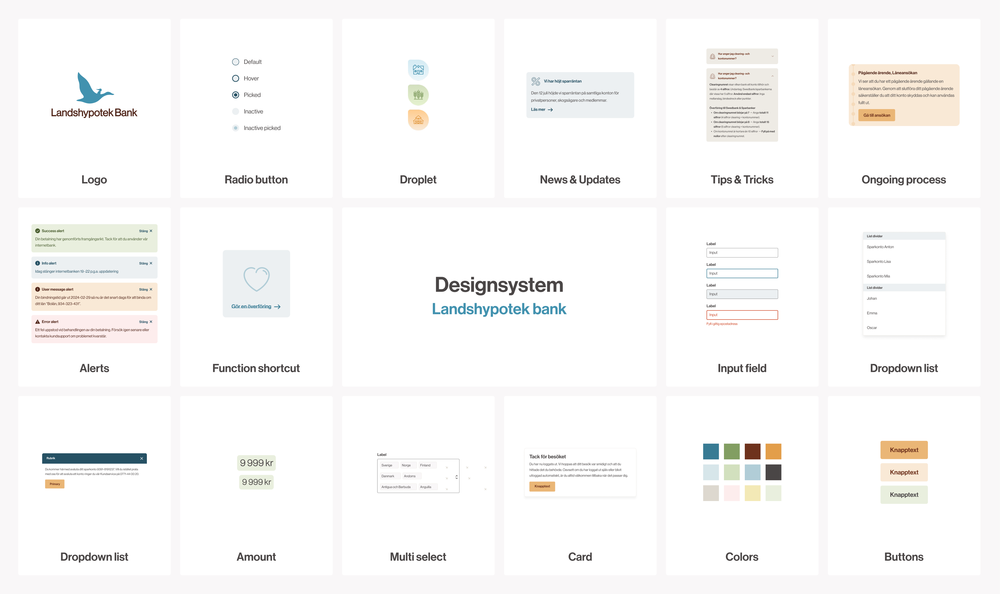

Modernizing a 188-year-old bank —accessible by design, not by patch.
Client — Landshypotek BankRole — UX, UI & Design Systems

ScopeInternet Bank · Design System · Internal Tools
ClientSweden's leading agricultural bank, member-owned
StandardWCAG 2.2 AA — throughout, by default
The Brief
A bank rooted in Swedish farming and forestry, bringing its digital home up to date — with accessibility built into the foundation, not bolted on at the end.
Landshypotek Bank is one of Sweden's leading agricultural banks — cooperatively owned by its borrowers, with roots deep in the country's farming and forestry. Antrop was tasked with modernizing the internet bank, building a shared design system, and designing several internal tools, with WCAG 2.2 AA accessibility as a requirement running through all of it.
The work spanned the whole delivery chain. It began with research and business analysis — studying existing usage, benchmarking against other banks, and reviewing the bank's brand and design values — which set the foundation for the digital design and the strategy ahead. My role ran from high-level navigation down to detailed flows, interfaces and microcopy.
The Turning Point
Accessibility isn't a checklist you run at the end. Build it into the system once, and every screen that follows inherits it.
The system as engine. Figma components were converted into coded components in real time with the bank's developers, documented in Storybook. Accessibility and consistency now ship by default — and future projects start with the hard part already solved, meeting the EU accessibility directive from the ground up.
One brand, two states. A particular challenge was the seamless transition from the public, logged-out site to the logged-in bank. I challenged the existing graphical profile to make that shift feel continuous — modernizing the experience while keeping the original feel intact.
The Work
Four moves
01
Internet Bank
Navigation, flows, interfaces and microcopy for the logged-in bank — all built on the design system. User testing found the new navigation simple and pedagogical.
02
Design System
Figma components converted to coded components in lockstep with developers, documented in Storybook — with WCAG 2.2 AA baked in.
03
Internal Tools
Service design for staff — a valuation portal for agricultural-property valuers and a caseworker aid for sustainability scoring — shaped around how employees actually work.
04
Accessibility
WCAG 2.2 AA across the board — meeting the EU accessibility directive and embedding inclusive practice into the organization's foundations.


The Results
Built to last
Meets the EU accessibility directive, with accessibility embedded in the design system
Faster development cycles — changes ship quicker across the whole organization
Future digital projects begin with accessibility already solved, not from scratch
Updated navigation tested as simple and pedagogical, with positive feedback from staff
"The design system has let us work more efficiently across the whole organization, and ship changes faster."
Elsa Tegby — Product Owner, Digital Channels, Landshypotek Bank